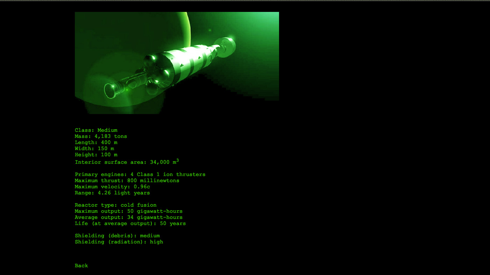
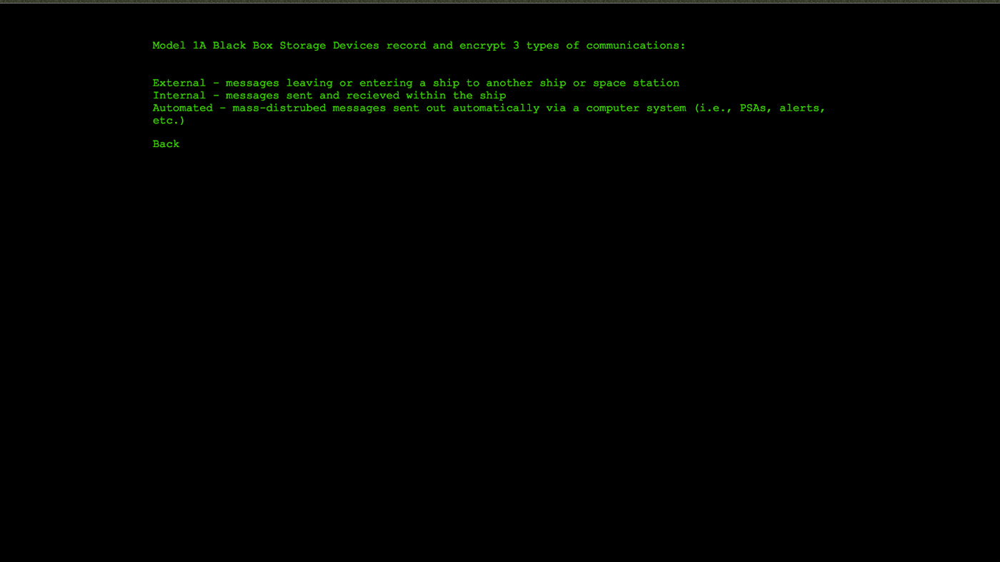

Black Box
Interactive Found Footage
I created Black Box as a project for a Digital Narrative class in school. I wanted to tell a found-footage story in a new and unique style by replacing the camera with a computer terminal. To uncover the truth about what happened, you have to look through every section and leave no stone unturned.
It is the year 2258. Humanity has left the cradle of Earth and begun to explore the solar system and beyond. Settlements and colonies have started on the Moon, Mars, and the moons of Jupiter and Saturn, and humanity’s gaze is ever outward and ever upward.
You are a computer forensics expert for the United Nations Interstellar Travel Agency, the governing body that regulates space travel. One day, a ship shows up with a black box from an unknown ship. It was found floating in space, with no ship in sight. It is your job to determine what happened to the ship the black box came from based on the information it contains.
2 / 3

Ship Information Screen
3 / 3

Data Storage Screen
❮
❯
- Aidan Bauer